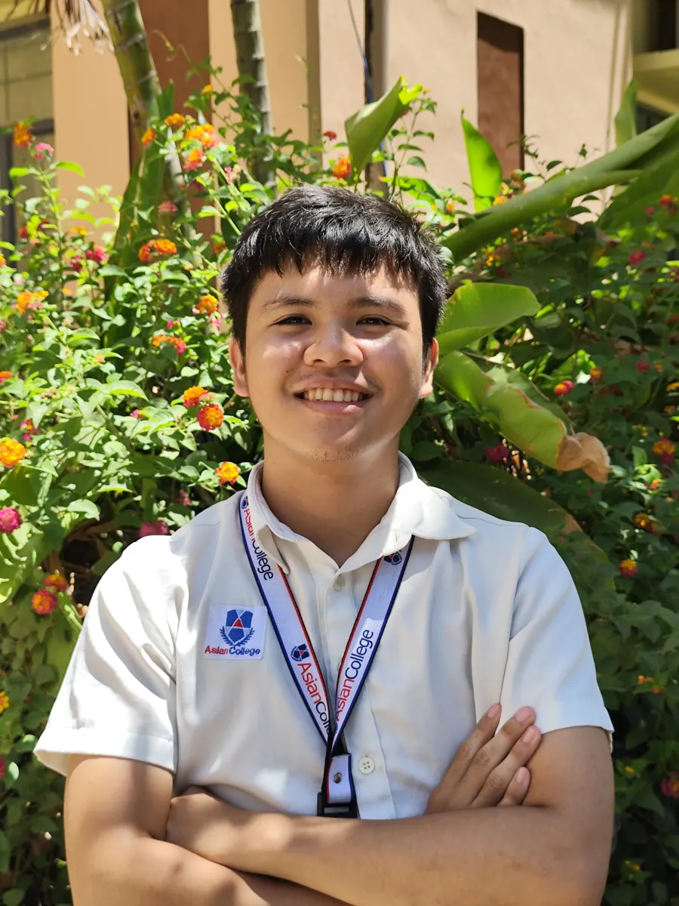
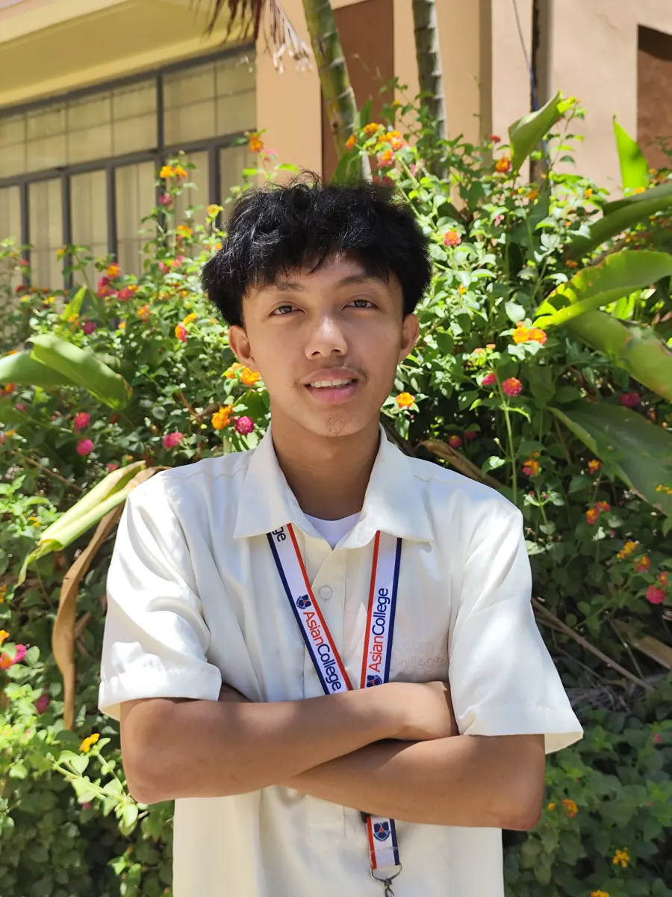
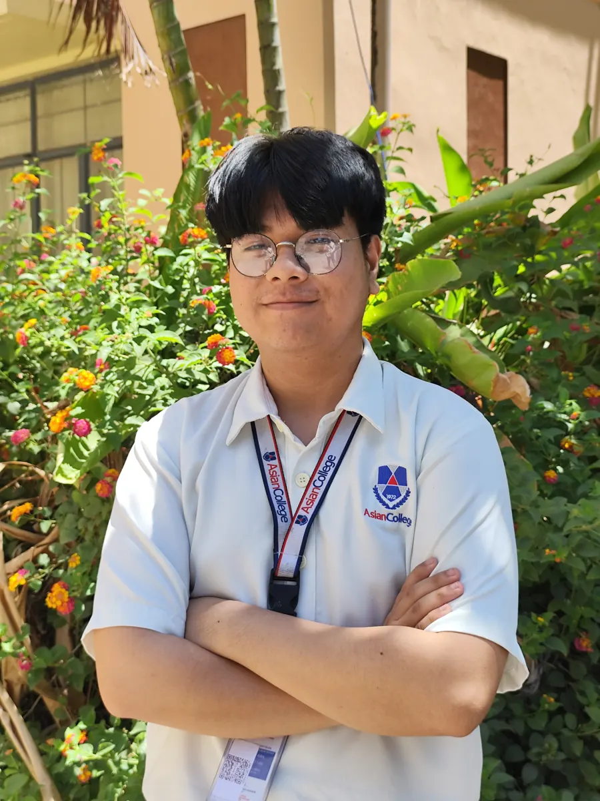
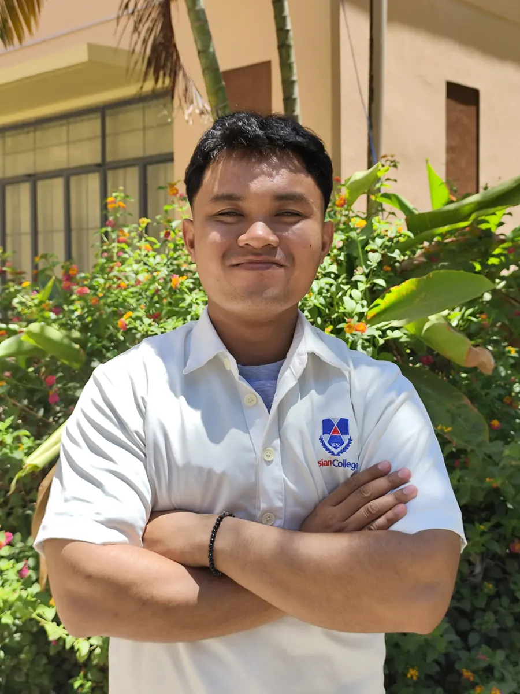
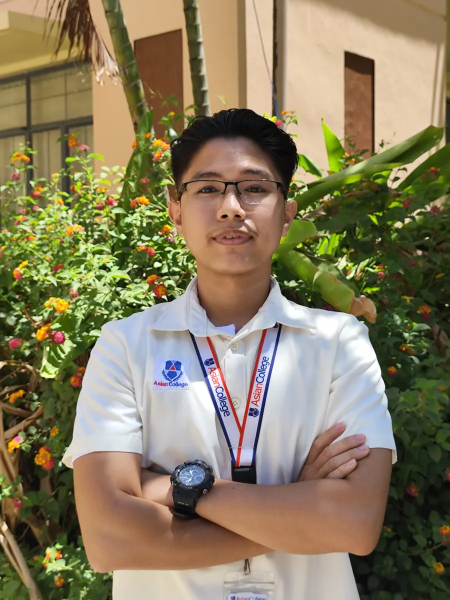
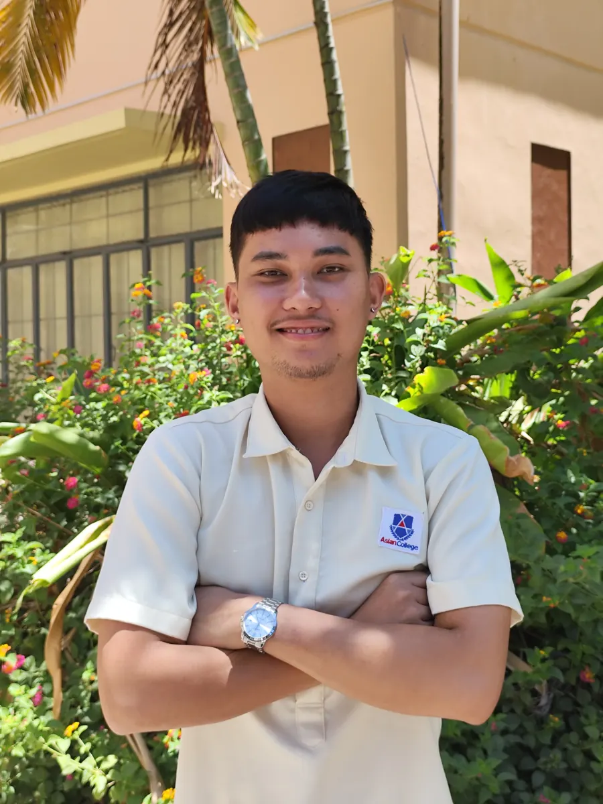

 01 Lead Developer Jethro Moses B. Sala Lead Developer / Editor / Lead Designer 2nd Year Bachelor of Science in Computer Engineering jbsala.student@asiancollege.edu.ph
 02 Co-Developer Earlmark S. Sotello Co-Developer 2nd Year Bachelor of Science in Computer Engineering essotello.student@asiancollege.edu.ph
 03 Editor John Harvey E. Awil Editor / Co-Developer 2nd Year Bachelor of Science in Computer Engineering jeawil.student@asiancollege.edu.ph
 04 Photographer Vincent Gabriel Vilan Photographer / Co-Developer 2nd Year Bachelor of Science in Computer Engineering vvilan.student@asiancollege.edu.ph
 05 Co-Developer Vince N. Faustorilla Co-Developer 2nd Year Bachelor of Science in Computer Engineering vnfaustorilla.student@asiancollege.edu.ph
 06 Co-Developer Justine Jules S. Frasco Co-Developer 2nd Year Bachelor of Science in Computer Engineering jsfrasco.student@asiancollege.edu.ph